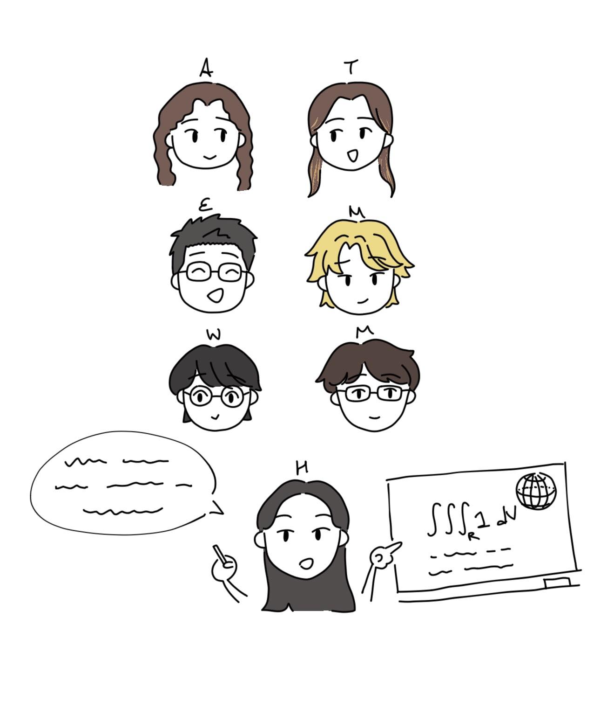

Hannah KeeseI'm an EF lecturer in the mathematics department at the University of New South Wales Sydney. I'm particularly interested in active learning methods and making mathematics accessible to a wide audience. My past research was in geometric representation theory.Room 2075 Anita Lawrence Centre UNSW Sydney Email: h dot keese at unsw dot edu dot au |
|
